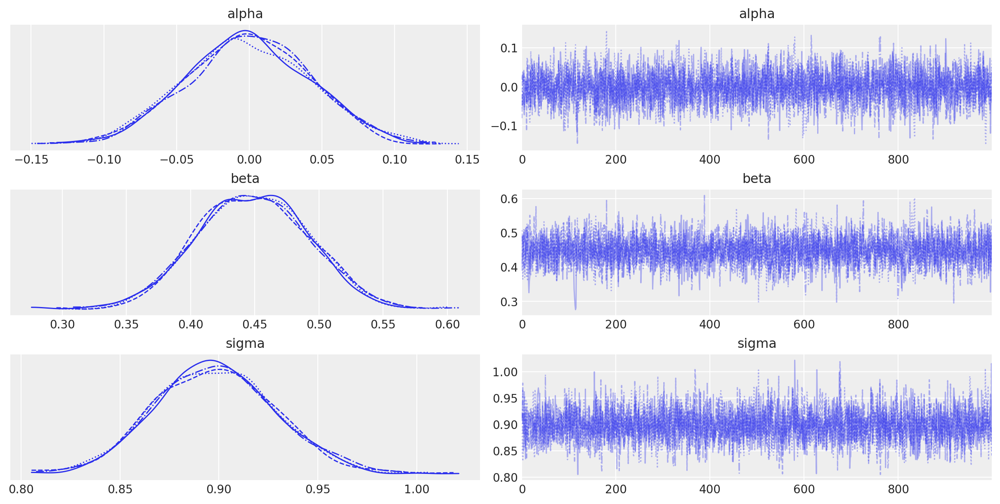
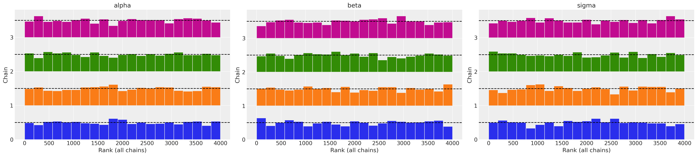
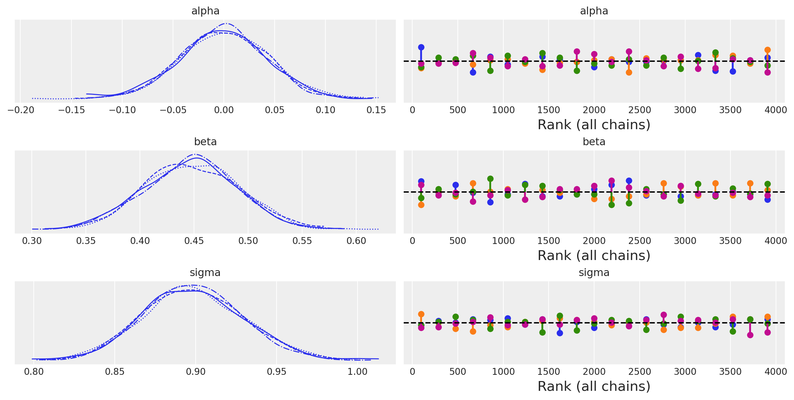
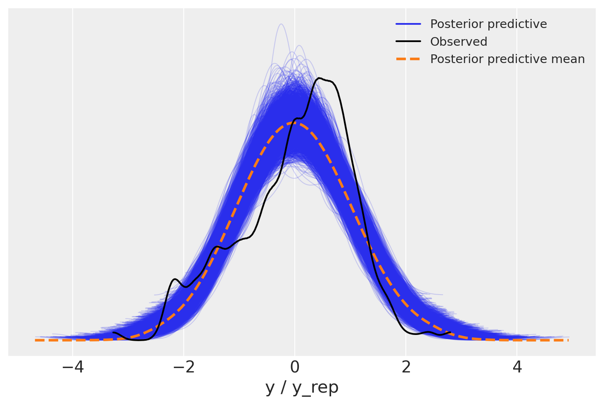
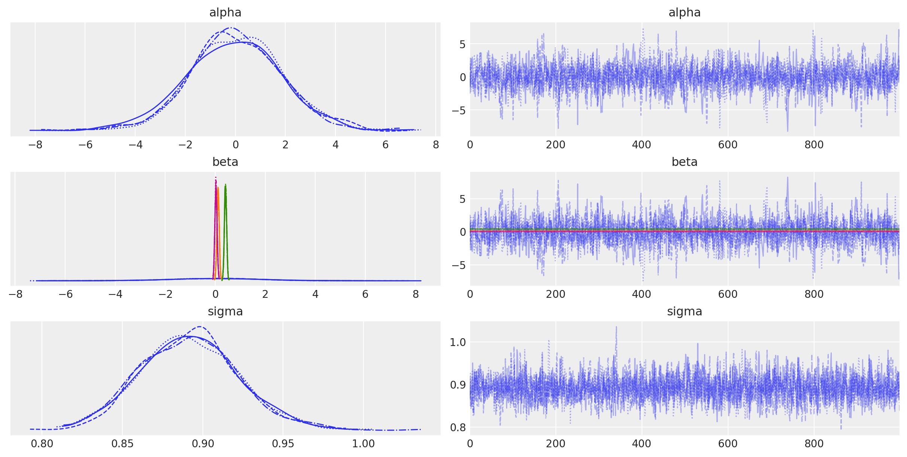
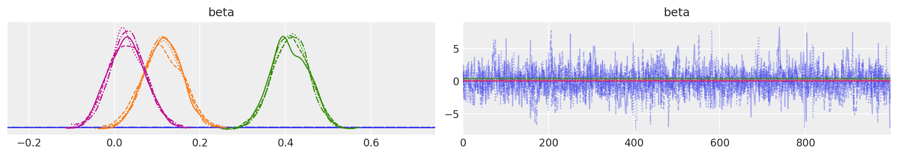

Regressione lineare con Stan#
Preparazione del Notebook#
import os
import numpy as np
import pandas as pd
import matplotlib.pyplot as plt
import seaborn as sns
import scipy.stats as stats
import arviz as az
import warnings
from cmdstanpy import cmdstan_path, CmdStanModel
---------------------------------------------------------------------------
ModuleNotFoundError Traceback (most recent call last)
Cell In[1], line 9
7 import arviz as az
8 import warnings
----> 9 from cmdstanpy import cmdstan_path, CmdStanModel
ModuleNotFoundError: No module named 'cmdstanpy'
%config InlineBackend.figure_format = 'retina'
# Initialize random number generator
RANDOM_SEED = 8927
rng = np.random.default_rng(RANDOM_SEED)
az.style.use("arviz-darkgrid")
# Imposta la precisione globale a 2 cifre decimali
pd.set_option('display.precision', 2)
Utilizzeremo il modello bivariate_linreg_model che può essere usato sia per la regressione bivariata. Il modello Stan assume che tutte le variabili, sia la \(y\) sia le \(X\) siano standardizzate. Sui parametri del modello (\(\alpha\), \(\beta\), \(\sigma\)) sono state imposte delle distribuzioni a priori debolmente informative.
stan_file = os.path.join('stan', 'bivariate_linreg_model.stan')
with open(stan_file, 'r') as f:
print(f.read())
data {
int<lower=1> N;
vector[N] x;
vector[N] y;
}
parameters {
real alpha;
real beta;
real<lower=0> sigma;
}
model {
y ~ normal(alpha + beta * x, sigma);
alpha ~ normal(0, 2.5);
beta ~ normal(0, 2.5);
sigma ~ normal(0, 2.5);
}
generated quantities {
array[N] real y_rep = normal_rng(alpha + beta * x, sigma);
}
Compiliamo il modello.
model = CmdStanModel(stan_file=stan_file)
print(model)
CmdStanModel: name=bivariate_linreg_model
stan_file=/Users/corradocaudek/_repositories/ds4p/chapter_5/stan/bivariate_linreg_model.stan
exe_file=/Users/corradocaudek/_repositories/ds4p/chapter_5/stan/bivariate_linreg_model
compiler_options=stanc_options={}, cpp_options={}
Creiamo il dizionario che contiene i dati richiesti dal modello.
kidiq = pd.read_stata("../data/kidiq.dta")
kidiq.head()
| kid_score | mom_hs | mom_iq | mom_work | mom_age | |
|---|---|---|---|---|---|
| 0 | 65 | 1.0 | 121.12 | 4 | 27 |
| 1 | 98 | 1.0 | 89.36 | 4 | 25 |
| 2 | 85 | 1.0 | 115.44 | 4 | 27 |
| 3 | 83 | 1.0 | 99.45 | 3 | 25 |
| 4 | 115 | 1.0 | 92.75 | 4 | 27 |
x = stats.zscore(kidiq["mom_iq"])
y = stats.zscore(kidiq["kid_score"])
print(np.mean(x), np.std(x))
4.9115857310606007e-17 0.9999999999999999
I dati devono essere contenuti in un dizionario. Nel caso presente, il dizionario data può essere creato nel modo seguente.
stan_data = {
"N" : len(x),
"x" : x,
"y" : y
}
Eseguiamo il campionamento MCMC.
fit = model.sample(data=stan_data)
Show code cell output
06:48:39 - cmdstanpy - INFO - CmdStan start processing
chain 1 | | 00:00 Status
chain 1 |██████▎ | 00:00 Iteration: 1100 / 2000 [ 55%] (Sampling)
chain 1 |██████████| 00:00 Sampling completed
chain 2 |██████████| 00:00 Sampling completed
chain 3 |██████████| 00:00 Sampling completed
chain 4 |██████████| 00:00 Sampling completed
06:48:39 - cmdstanpy - INFO - CmdStan done processing.
06:48:39 - cmdstanpy - WARNING - Non-fatal error during sampling:
Exception: normal_lpdf: Scale parameter is 0, but must be positive! (in 'bivariate_linreg_model.stan', line 12, column 2 to column 38)
Exception: normal_lpdf: Scale parameter is 0, but must be positive! (in 'bivariate_linreg_model.stan', line 12, column 2 to column 38)
Exception: normal_lpdf: Scale parameter is 0, but must be positive! (in 'bivariate_linreg_model.stan', line 12, column 2 to column 38)
Consider re-running with show_console=True if the above output is unclear!
Esaminiamo i risultati ottenuti.
print(fit.summary())
Mean MCSE StdDev 5% 50% 95% N_Eff \
lp__ -1.70e+02 2.99e-02 1.26 -172.44 -1.70e+02 -168.68 1767.76
alpha -8.30e-04 6.45e-04 0.04 -0.07 -1.20e-03 0.07 4402.82
beta 4.48e-01 7.19e-04 0.04 0.38 4.48e-01 0.52 3651.27
sigma 8.98e-01 4.79e-04 0.03 0.85 8.98e-01 0.95 4075.94
y_rep[1] 6.66e-01 1.43e-02 0.90 -0.81 6.68e-01 2.15 3961.32
... ... ... ... ... ... ... ...
y_rep[430] -4.57e-01 1.40e-02 0.89 -1.91 -4.42e-01 0.99 4013.63
y_rep[431] -2.18e-01 1.39e-02 0.90 -1.69 -2.20e-01 1.25 4174.13
y_rep[432] -1.24e-01 1.38e-02 0.90 -1.59 -1.15e-01 1.34 4266.88
y_rep[433] -1.00e-01 1.43e-02 0.90 -1.59 -1.05e-01 1.37 3927.98
y_rep[434] -2.83e-01 1.44e-02 0.91 -1.78 -2.74e-01 1.21 4000.54
N_Eff/s R_hat
lp__ 2770.79 1.0
alpha 6900.98 1.0
beta 5723.00 1.0
sigma 6388.62 1.0
y_rep[1] 6208.96 1.0
... ... ...
y_rep[430] 6290.96 1.0
y_rep[431] 6542.52 1.0
y_rep[432] 6687.90 1.0
y_rep[433] 6156.71 1.0
y_rep[434] 6270.44 1.0
[438 rows x 9 columns]
print(fit.diagnose())
Processing csv files: /var/folders/s7/z86r4t9j6yx376cm120nln6w0000gn/T/tmp6ipuyft3/bivariate_linreg_model7f29pa12/bivariate_linreg_model-20240313062958_1.csv, /var/folders/s7/z86r4t9j6yx376cm120nln6w0000gn/T/tmp6ipuyft3/bivariate_linreg_model7f29pa12/bivariate_linreg_model-20240313062958_2.csv, /var/folders/s7/z86r4t9j6yx376cm120nln6w0000gn/T/tmp6ipuyft3/bivariate_linreg_model7f29pa12/bivariate_linreg_model-20240313062958_3.csv, /var/folders/s7/z86r4t9j6yx376cm120nln6w0000gn/T/tmp6ipuyft3/bivariate_linreg_model7f29pa12/bivariate_linreg_model-20240313062958_4.csv
Checking sampler transitions treedepth.
Treedepth satisfactory for all transitions.
Checking sampler transitions for divergences.
No divergent transitions found.
Checking E-BFMI - sampler transitions HMC potential energy.
E-BFMI satisfactory.
Effective sample size satisfactory.
Split R-hat values satisfactory all parameters.
Processing complete, no problems detected.
L’oggetto fit generato da cmdstanpy appartiene alla classe cmdstanpy.stanfit.mcmc.CmdStanMCMC. Questo oggetto è funzionalmente equivalente a un oggetto della classe InferenceData, permettendo quindi la sua manipolazione tramite le funzioni fornite da ArviZ.
az.summary(fit, var_names=(["alpha", "beta", "sigma"]), hdi_prob=0.95)
| mean | sd | hdi_2.5% | hdi_97.5% | mcse_mean | mcse_sd | ess_bulk | ess_tail | r_hat | |
|---|---|---|---|---|---|---|---|---|---|
| alpha | -1.00e-03 | 0.04 | -0.08 | 0.08 | 1.00e-03 | 1.00e-03 | 4397.0 | 3212.0 | 1.0 |
| beta | 4.48e-01 | 0.04 | 0.37 | 0.53 | 1.00e-03 | 1.00e-03 | 3816.0 | 2607.0 | 1.0 |
| sigma | 8.98e-01 | 0.03 | 0.84 | 0.96 | 0.00e+00 | 0.00e+00 | 4080.0 | 2798.0 | 1.0 |
_ = az.plot_trace(fit, var_names=(["alpha", "beta", "sigma"]))

_ = az.plot_rank(fit, var_names=(["alpha", "beta", "sigma"]), kind="bars")

_ = az.plot_trace(fit, var_names=(["alpha", "beta", "sigma"]), kind="rank_vlines")

Alla media della distribuzione a posteriore del parametro \(\beta\) assegnamo la solita interpretazione: all’aumentare dell’intelligenza della madre di una deviazione standard, il valore atteso dell’intelligenza del figlio aumenta di 0.45 deviazioni standard, 95% CI [0.36, 0.53]. L’errore standard della regressione è piuttosto grande, con \(\sigma_E\) = 0.90.
Possiamo convertire l’oggetto fit in un oggetto di classe InferenceData nel modo seguente:
post = az.convert_to_inference_data(fit)
post
-
<xarray.Dataset> Size: 14MB Dimensions: (chain: 4, draw: 1000, y_rep_dim_0: 434) Coordinates: * chain (chain) int64 32B 0 1 2 3 * draw (draw) int64 8kB 0 1 2 3 4 5 6 ... 993 994 995 996 997 998 999 * y_rep_dim_0 (y_rep_dim_0) int64 3kB 0 1 2 3 4 5 ... 428 429 430 431 432 433 Data variables: alpha (chain, draw) float64 32kB 0.006212 0.03164 ... 0.02415 -0.0167 beta (chain, draw) float64 32kB 0.4595 0.4772 ... 0.4715 0.4014 sigma (chain, draw) float64 32kB 0.8861 0.92 0.9931 ... 0.8531 0.9113 y_rep (chain, draw, y_rep_dim_0) float64 14MB 0.3071 ... -0.1032 Attributes: created_at: 2024-03-13T05:25:14.113019 arviz_version: 0.17.0 inference_library: cmdstanpy inference_library_version: 1.2.1 -
<xarray.Dataset> Size: 204kB Dimensions: (chain: 4, draw: 1000) Coordinates: * chain (chain) int64 32B 0 1 2 3 * draw (draw) int64 8kB 0 1 2 3 4 5 6 ... 994 995 996 997 998 999 Data variables: lp (chain, draw) float64 32kB -168.6 -169.3 ... -169.9 -169.3 acceptance_rate (chain, draw) float64 32kB 0.9878 0.7919 ... 0.6998 1.0 step_size (chain, draw) float64 32kB 0.8125 0.8125 ... 0.719 0.719 tree_depth (chain, draw) int64 32kB 2 2 2 3 2 2 2 2 ... 2 2 2 2 3 2 3 n_steps (chain, draw) int64 32kB 3 3 3 7 3 3 3 7 ... 3 7 3 3 7 3 7 diverging (chain, draw) bool 4kB False False False ... False False energy (chain, draw) float64 32kB 169.2 170.6 ... 174.0 170.3 Attributes: created_at: 2024-03-13T05:25:14.119870 arviz_version: 0.17.0 inference_library: cmdstanpy inference_library_version: 1.2.1
Per creare un PPC plot dobbiamo innanzitutto creare un oggetto InferenceData nel quale i dati sono strutturati come si aspetta Arviz:
idata = az.from_cmdstanpy(
posterior=fit,
posterior_predictive='y_rep',
observed_data={'y': stats.zscore(kidiq["kid_score"])},
)
_ = az.plot_ppc(idata, data_pairs={'y': 'y_rep'})
/opt/anaconda3/envs/stan_env/lib/python3.12/site-packages/arviz/plots/ppcplot.py:267: FutureWarning: The return type of `Dataset.dims` will be changed to return a set of dimension names in future, in order to be more consistent with `DataArray.dims`. To access a mapping from dimension names to lengths, please use `Dataset.sizes`.
flatten_pp = list(predictive_dataset.dims.keys())
/opt/anaconda3/envs/stan_env/lib/python3.12/site-packages/arviz/plots/ppcplot.py:271: FutureWarning: The return type of `Dataset.dims` will be changed to return a set of dimension names in future, in order to be more consistent with `DataArray.dims`. To access a mapping from dimension names to lengths, please use `Dataset.sizes`.
flatten = list(observed_data.dims.keys())

Regressione multipla#
È facile estendere il modello al caso in cui consideriamo predittori multipli dell’intelligenza del bambino. È sufficiente creare una matric \(X\) che contiene le colonne che corrispondono ai vari predittori che vogliamo considerare. In qusto esempio, utilizzeremo come preditori dell’intelligenza del figlio, la scolarità della madre (codificata com 0 e 1, per avere o non avere completato le scuole superiori), l’intelligenza della madre e l’età della madre. Tutte le variabili vengono standardizzate prima di procedere con l’analisi.
Consideriamo in dettaglio la verosimiglianza alpha + X * beta nel caso in cui \(X\) è una matrice con più di un predittore.
Prima di tutto, definiamo le variabili coinvolte:
y: è il vettore delle osservazioni, dove ogni elemento rappresenta un dato osservato.alpha: è l’intercetta del modello lineare, un singolo valore che rappresenta il punto in cui la linea del modello incrocia l’asse y quando tutte le variabili indipendenti (X) sono zero.X: è la matrice dei predittori (o variabili indipendenti), dove ogni riga corrisponde a un’osservazione e ogni colonna a una variabile indipendente.beta: è il vettore dei coefficienti, dove ogni elemento rappresenta l’effetto di una corrispondente variabile indipendente inXsulla variabile dipendentey.sigma: è la deviazione standard degli errori del modello, che misura quanto i dati reali si discostano dalla linea del modello.
L’espressione alpha + X * beta calcola i valori previsti (y predetti) per il modello lineare. Ecco come funziona, spiegato senza ricorrere all’algebra matriciale:
Multiplicazione
X * beta: Per ogni riga inX(che rappresenta un’osservazione con le sue variabili indipendenti), moltiplichiamo ogni elemento (ogni variabile indipendente) per il corrispondente elemento inbeta(il coefficiente della variabile) e sommiamo questi prodotti. Questo ci dà un valore singolo per ogni osservazione, che rappresenta il contributo combinato di tutte le variabili indipendenti alla variabile dipendente, prima di aggiungere l’intercetta.Aggiunta di
alpha: Dopo aver calcolato il contributo combinato delle variabili indipendenti, aggiungiamo l’intercetta (alpha) a questo valore. L’intercetta rappresenta il valore diyquando tutte le variabili indipendenti sono zero. Aggiungendola, otteniamo il valore previsto finale peryper ogni osservazione.Risultato: L’espressione
alpha + X * betaproduce quindi un vettore di valori previsti di dimensione \(n \times 1\), dove \(n\) è il numero di osservazioni iny. Ogni elemento di questo vettore è il valore previsto diyper ogni osservazione, dato il modello lineare specificato.
Per fare un esempio semplice, immaginiamo di avere un modello con una sola variabile indipendente per semplificare:
Supponiamo che
alphasia 5 (l’intercetta).La matrice
Xha una sola colonna (una sola variabile indipendente) con, per esempio, tre osservazioni:[1, 2, 3].Il vettore
betaha un solo elemento, diciamo 2, che è il coefficiente della nostra variabile indipendente.
Per ogni osservazione in X, moltiplichiamo il suo valore per beta (2 in questo caso) e aggiungiamo alpha (5). Quindi, per la prima osservazione (1), otteniamo \(1 \times 2 + 5 = 7\), e così via per le altre osservazioni. Il risultato finale è un vettore di valori previsti di y.
Espandiamo ora l’esempio precedente per un caso di regressione multipla, dove abbiamo due variabili indipendenti (predittori). Questo ci permetterà di vedere come il processo di calcolo dei valori previsti si adatta quando ci sono più predittori nel modello.
alpha: l’intercetta del modello, diciamo che è 5.X: la matrice dei predittori ora ha due colonne, perché abbiamo due variabili indipendenti. Per esempio, possiamo avere tre osservazioni come segue:\[\begin{split} X = \begin{bmatrix} 1 & 3 \\ 2 & 2 \\ 3 & 1 \\ \end{bmatrix} \end{split}\]Qui, ogni riga rappresenta un’osservazione e ogni colonna rappresenta una variabile indipendente. Ad esempio, la prima riga rappresenta una osservazione dove il primo predittore ha valore 1 e il secondo predittore ha valore 3.
beta: il vettore dei coefficienti ora ha due elementi, uno per ogni variabile indipendente. Supponiamo chebeta = [2, 1], dove 2 è il coefficiente per il primo predittore e 1 è il coefficiente per il secondo predittore.sigma: la deviazione standard degli errori del modello, che per semplicità non utilizzeremo direttamente in questo esempio.
Per calcolare i valori previsti (y predetti) per ogni osservazione, seguiamo questi passi:
Moltiplicazione
X * beta:Per la prima osservazione (
[1, 3]), calcoliamo: \(1 \times 2 + 3 \times 1 = 2 + 3 = 5\).Per la seconda osservazione (
[2, 2]), calcoliamo: \(2 \times 2 + 2 \times 1 = 4 + 2 = 6\).Per la terza osservazione (
[3, 1]), calcoliamo: \(3 \times 2 + 1 \times 1 = 6 + 1 = 7\).
Questo passo ci dà il contributo combinato delle variabili indipendenti alla variabile dipendente per ogni osservazione.
Aggiunta di
alpha:Aggiungiamo l’intercetta
alpha(5) ai risultati precedenti per ottenere i valori previsti finali diy:Prima osservazione: \(5 + 5 = 10\).
Seconda osservazione: \(6 + 5 = 11\).
Terza osservazione: \(7 + 5 = 12\).
Risultato:
Otteniamo quindi un vettore di valori previsti di
ydi dimensione \(n \times 1\), dove \(n\) è il numero di osservazioni. In questo caso, il vettore dei valori previsti diysarà[10, 11, 12].
Questo esempio illustra come l’espressione alpha + X * beta in un contesto di regressione multipla produca un vettore di valori previsti. Ogni valore previsto è il risultato della somma del prodotto dei predittori per i loro rispettivi coefficienti più l’intercetta, riflettendo come il modello lineare stima y in base ai valori di più variabili indipendenti.
stan_file = os.path.join('stan', 'linear_regression.stan')
with open(stan_file, 'r') as f:
print(f.read())
// run with 4 chains and 2k iters.
// all data should be scaled to mean 0 and std 1:
data {
int<lower=1> N; // number of observations
int<lower=1> K; // number of independent variables, including the intercept
matrix[N, K] X; // data matrix
vector[N] y; // dependent variable vector
}
parameters {
real alpha; // intercept
vector[K] beta; // coefficients for independent variables
real<lower=0> sigma; // model error
}
model {
// priors
alpha ~ student_t(3, 0, 2.5);
beta ~ student_t(3, 0, 2.5);
sigma ~ exponential(1);
// likelihood
y ~ normal(alpha + X * beta, sigma);
}
generated quantities {
vector[N] log_lik; // Log-likelihood for each observation
vector[N] y_rep; // Posterior predictions for each observation
for (n in 1:N) {
log_lik[n] = normal_lpdf(y[n] | alpha + dot_product(X[n], beta), sigma);
y_rep[n] = normal_rng(alpha + dot_product(X[n], beta), sigma);
}
}
model = CmdStanModel(stan_file=stan_file)
print(model)
CmdStanModel: name=linear_regression
stan_file=/Users/corradocaudek/_repositories/ds4p/chapter_5/stan/linear_regression.stan
exe_file=/Users/corradocaudek/_repositories/ds4p/chapter_5/stan/linear_regression
compiler_options=stanc_options={}, cpp_options={}
x1 = stats.zscore(kidiq["mom_hs"])
x2 = stats.zscore(kidiq["mom_iq"])
x3 = stats.zscore(kidiq["mom_age"])
df = pd.DataFrame({
"one": [1] * len(x1), # Crea una lista di 1 della stessa lunghezza di x1
"x1": x1,
"x2": x2,
"x3": x3
})
df.head()
| one | x1 | x2 | x3 | |
|---|---|---|---|---|
| 0 | 1 | 0.52 | 1.41 | 1.56 |
| 1 | 1 | 0.52 | -0.71 | 0.82 |
| 2 | 1 | 0.52 | 1.03 | 1.56 |
| 3 | 1 | 0.52 | -0.04 | 0.82 |
| 4 | 1 | 0.52 | -0.48 | 1.56 |
# Convert scaled DataFrame to numpy matrix
X = df.to_numpy()
# Verificare le dimensioni di X
print("Dimensioni di X:", X.shape)
Dimensioni di X: (434, 4)
stan_data = {
"N": X.shape[0],
"K": X.shape[1], # Nota: questa include anche la colonna dell'intercetta
"X": X,
"y": stats.zscore(kidiq["kid_score"]) # Assumo che kid_score sia la variabile dipendente
}
fit2 = model.sample(data=stan_data)
Show code cell output
06:50:14 - cmdstanpy - INFO - CmdStan start processing
chain 1 | | 00:00 Status
chain 1 |█▎ | 00:00 Iteration: 100 / 2000 [ 5%] (Warmup)
chain 1 |██▎ | 00:00 Iteration: 300 / 2000 [ 15%] (Warmup)
chain 1 |███▏ | 00:00 Iteration: 500 / 2000 [ 25%] (Warmup)
chain 1 |███▋ | 00:00 Iteration: 600 / 2000 [ 30%] (Warmup)
chain 1 |████ | 00:01 Iteration: 700 / 2000 [ 35%] (Warmup)
chain 1 |████▌ | 00:01 Iteration: 800 / 2000 [ 40%] (Warmup)
chain 1 |█████ | 00:01 Iteration: 900 / 2000 [ 45%] (Warmup)
chain 1 |█████▉ | 00:01 Iteration: 1001 / 2000 [ 50%] (Sampling)
chain 1 |██████▎ | 00:01 Iteration: 1100 / 2000 [ 55%] (Sampling)
chain 1 |██████▊ | 00:01 Iteration: 1200 / 2000 [ 60%] (Sampling)
chain 1 |███████▎ | 00:02 Iteration: 1300 / 2000 [ 65%] (Sampling)
chain 1 |███████▋ | 00:02 Iteration: 1400 / 2000 [ 70%] (Sampling)
chain 1 |████████▏ | 00:02 Iteration: 1500 / 2000 [ 75%] (Sampling)
chain 1 |████████▋ | 00:02 Iteration: 1600 / 2000 [ 80%] (Sampling)
chain 1 |█████████ | 00:02 Iteration: 1700 / 2000 [ 85%] (Sampling)
chain 1 |█████████▌| 00:02 Iteration: 1800 / 2000 [ 90%] (Sampling)
chain 1 |██████████| 00:03 Iteration: 1900 / 2000 [ 95%] (Sampling)
chain 1 |██████████| 00:03 Sampling completed
chain 2 |██████████| 00:03 Sampling completed
chain 3 |██████████| 00:03 Sampling completed
chain 4 |██████████| 00:03 Sampling completed
06:50:18 - cmdstanpy - INFO - CmdStan done processing.
post = az.convert_to_inference_data(fit2)
post
-
<xarray.Dataset> Size: 14MB Dimensions: (chain: 4, draw: 1000, beta_dim_0: 4, y_rep_dim_0: 434) Coordinates: * chain (chain) int64 32B 0 1 2 3 * draw (draw) int64 8kB 0 1 2 3 4 5 6 ... 993 994 995 996 997 998 999 * beta_dim_0 (beta_dim_0) int64 32B 0 1 2 3 * y_rep_dim_0 (y_rep_dim_0) int64 3kB 0 1 2 3 4 5 ... 428 429 430 431 432 433 Data variables: alpha (chain, draw) float64 32kB 0.1091 -1.028 -1.517 ... 1.124 2.543 beta (chain, draw, beta_dim_0) float64 128kB -0.04071 ... 0.01921 sigma (chain, draw) float64 32kB 0.8689 0.9175 ... 0.9052 0.8383 y_rep (chain, draw, y_rep_dim_0) float64 14MB 0.5866 ... 0.04326 Attributes: created_at: 2024-03-13T05:50:21.782603 arviz_version: 0.17.0 inference_library: cmdstanpy inference_library_version: 1.2.1 -
<xarray.Dataset> Size: 14MB Dimensions: (chain: 4, draw: 1000, log_lik_dim_0: 434) Coordinates: * chain (chain) int64 32B 0 1 2 3 * draw (draw) int64 8kB 0 1 2 3 4 5 6 ... 994 995 996 997 998 999 * log_lik_dim_0 (log_lik_dim_0) int64 3kB 0 1 2 3 4 5 ... 429 430 431 432 433 Data variables: log_lik (chain, draw, log_lik_dim_0) float64 14MB -2.707 ... -1.045 Attributes: created_at: 2024-03-13T05:50:21.790913 arviz_version: 0.17.0 inference_library: cmdstanpy inference_library_version: 1.2.1 -
<xarray.Dataset> Size: 204kB Dimensions: (chain: 4, draw: 1000) Coordinates: * chain (chain) int64 32B 0 1 2 3 * draw (draw) int64 8kB 0 1 2 3 4 5 6 ... 994 995 996 997 998 999 Data variables: lp (chain, draw) float64 32kB -169.3 -168.5 ... -171.0 -168.7 acceptance_rate (chain, draw) float64 32kB 0.8928 0.9431 ... 0.9818 0.8371 step_size (chain, draw) float64 32kB 0.02135 0.02135 ... 0.01937 tree_depth (chain, draw) int64 32kB 2 7 8 8 4 6 7 7 ... 6 7 7 7 8 8 8 n_steps (chain, draw) int64 32kB 3 127 255 255 ... 255 255 255 255 diverging (chain, draw) bool 4kB False False False ... False False energy (chain, draw) float64 32kB 169.4 172.2 ... 173.5 176.1 Attributes: created_at: 2024-03-13T05:50:21.787721 arviz_version: 0.17.0 inference_library: cmdstanpy inference_library_version: 1.2.1
az.summary(fit2, var_names=(["alpha", "beta", "sigma"]), hdi_prob=0.95)
| mean | sd | hdi_2.5% | hdi_97.5% | mcse_mean | mcse_sd | ess_bulk | ess_tail | r_hat | |
|---|---|---|---|---|---|---|---|---|---|
| alpha | 4.00e-03 | 1.91 | -3.55 | 4.02 | 4.40e-02 | 3.80e-02 | 1946.0 | 1691.0 | 1.0 |
| beta[0] | -5.00e-03 | 1.91 | -4.01 | 3.58 | 4.40e-02 | 3.80e-02 | 1941.0 | 1676.0 | 1.0 |
| beta[1] | 1.13e-01 | 0.05 | 0.02 | 0.20 | 1.00e-03 | 1.00e-03 | 3318.0 | 2721.0 | 1.0 |
| beta[2] | 4.12e-01 | 0.04 | 0.33 | 0.50 | 1.00e-03 | 1.00e-03 | 3161.0 | 2596.0 | 1.0 |
| beta[3] | 3.00e-02 | 0.04 | -0.06 | 0.12 | 1.00e-03 | 1.00e-03 | 3404.0 | 2518.0 | 1.0 |
| sigma | 8.92e-01 | 0.03 | 0.83 | 0.95 | 1.00e-03 | 0.00e+00 | 3133.0 | 2630.0 | 1.0 |
_ = az.plot_trace(fit2, var_names=(["alpha", "beta", "sigma"]))

# Zoom in
axes = az.plot_trace(fit2, var_names=["beta"])
for ax_row in axes:
ax_row[0].set_xlim(-0.25, 0.75) # Modifica solo l'asse del grafico della densità
plt.show()

Nel contesto della regressione multivariata, l’interpretazione dei coefficienti parziali differisce da quella della regressione bivariata. Nel nostro caso, il coefficiente associato all’intelligenza della madre, indicato come \(\beta\) = 0.41, assume il seguente significato: prevediamo che l’intelligenza del bambino aumenti di 0.41 deviazioni standard in media per ogni deviazione standard aggiuntiva nell’intelligenza della madre, mantenendo costanti gli effetti del livello di istruzione e dell’età della madre. Questo implica che stiamo considerando l’impatto dell’intelligenza della madre sull’intelligenza del bambino all’interno di una popolazione di madri che sono omogenee per quanto riguarda il livello di istruzione e l’età.
idata2 = az.from_cmdstanpy(
posterior=fit2,
posterior_predictive='y_rep',
observed_data={'y': stats.zscore(kidiq["kid_score"])},
)
_ = az.plot_ppc(idata2, data_pairs={'y': 'y_rep'})
/opt/anaconda3/envs/stan_env/lib/python3.12/site-packages/arviz/plots/ppcplot.py:267: FutureWarning: The return type of `Dataset.dims` will be changed to return a set of dimension names in future, in order to be more consistent with `DataArray.dims`. To access a mapping from dimension names to lengths, please use `Dataset.sizes`.
flatten_pp = list(predictive_dataset.dims.keys())
/opt/anaconda3/envs/stan_env/lib/python3.12/site-packages/arviz/plots/ppcplot.py:271: FutureWarning: The return type of `Dataset.dims` will be changed to return a set of dimension names in future, in order to be more consistent with `DataArray.dims`. To access a mapping from dimension names to lengths, please use `Dataset.sizes`.
flatten = list(observed_data.dims.keys())
Watermark#
%load_ext watermark
%watermark -n -u -v -iv -w -m -p cmdstanpy
Last updated: Wed Mar 13 2024
Python implementation: CPython
Python version : 3.12.2
IPython version : 8.22.2
cmdstanpy: 1.2.1
Compiler : Clang 16.0.6
OS : Darwin
Release : 23.4.0
Machine : arm64
Processor : arm
CPU cores : 8
Architecture: 64bit
numpy : 1.26.4
matplotlib: 3.8.3
pandas : 2.2.1
scipy : 1.12.0
seaborn : 0.13.2
arviz : 0.17.0
Watermark: 2.4.3